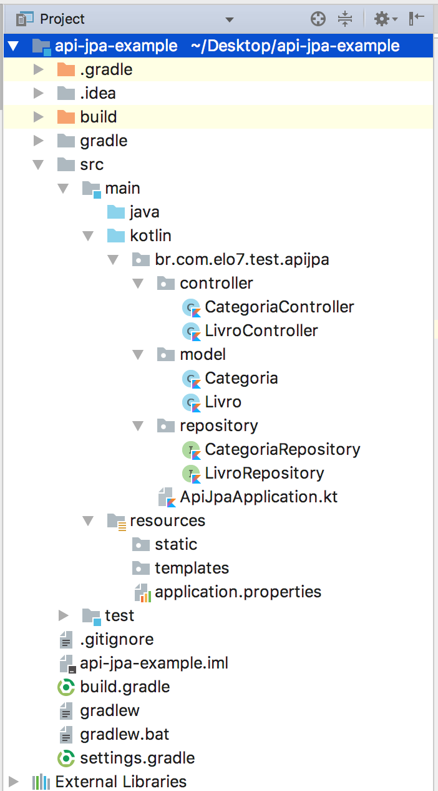

API Persistente com Kotlin, Spring Boot, MySQL, JPA e Hibernate
Publicado em:
@davidrobert
Kotlin vem ganhando muita popularidade nos últimos tempos devido a seus recursos de produtividade e a possibilidade de utilização na plataforma Android.
Devido à crescente popularidade do Kotlin, o Spring Framework também introduziu um suporte dedicado ao Kotlin.
Neste post, você aprenderá a criar uma API do CRUD Restful com o Kotlin, Spring Boot e JPA.
O que vamos construir?
Neste post criaremos APIs Restful para armazenar dados de livros e categorias. As categorias têm uma lista de livros, e cada livro pode ter uma categoria. Vamos escrever APIs para criar, recuperar, e excluir livros e categorias. Um livro tem um id, um título e o nome do autor.
Usaremos o MySQL como nossa fonte de dados e JPA e Hibernate para acessar os dados do banco de dados.
Criando a aplicação
Usaremos a ferramenta da Web Spring initializr para fazer o bootstrap da nossa aplicação.
- Acesse http://start.spring.io
- Defina o nome do Artefato
- Selecione Kotlin na seção de linguagens
- Selecione a versão mais recente do Spring Boot
- Adicione dependências da Web, JPA e MySQL.
- Clique em Gerar Projeto para gerar e baixar o projeto.
Configurando o MySQL
Precisamos configurar a URL, o nome de usuário e a senha do banco de dados MySQL para que o Spring Boot possa ter acesso.
Abra o arquivo src/main/resources/application.properties e inclua as seguintes propriedades nele:
## Spring DATASOURCE (DataSourceAutoConfiguration & DataSourceProperties)
spring.datasource.url = jdbc:mysql://localhost:3306/test?autoReconnect=true&useUnicode=true&characterEncoding=UTF-8&allowMultiQueries=true&useSSL=false
spring.datasource.username = root
spring.datasource.password =
spring.jpa.show-sql=false
## Hibernate Properties
# The SQL dialect makes Hibernate generate better SQL for the chosen database
spring.jpa.properties.hibernate.dialect = org.hibernate.dialect.MySQL5InnoDBDialect
# Hibernate ddl auto (create, create-drop, validate, update)
spring.jpa.hibernate.ddl-auto = update
Não se esqueça de alterar spring.datasource.username e spring.datasource.password conforme sua configuração do MySQL.
Além disso, a propriedade spring.jpa.hibernate.ddl-auto foi marcada para update. Essa propriedade atualiza o esquema do banco de dados sempre que você cria ou modifica os modelos de domínio na aplicação.
Criando os modelos do domínio
package br.com.elo7.test.apijpa.model
import com.fasterxml.jackson.annotation.JsonBackReference
import javax.persistence.*
import javax.validation.constraints.NotBlank
@Entity
data class Livro (
@Id @GeneratedValue(strategy = GenerationType.IDENTITY)
val id: Long = 0,
@get: NotBlank
val titulo: String = "",
@get: NotBlank
val autor: String = "",
@JsonBackReference
@ManyToOne(fetch = FetchType.EAGER)
@JoinColumn(name = "categoria_id")
val categoria: Categoria? = null
)
A classe Livro acabou ficando pequena e concisa. Isso porque no Kotlin os getters e setters são implicitamente definidos. Além disso, foi usada data class. Um data class gera automaticamente os métodos equals(), hashcode(), toString() e copy().
Há uma ressalva ao usar data classes com JPA: data classes requerem um construtor principal com pelo menos um parâmetro e o JPA requer um construtor sem argumentos. Para resolver este impasse, o Kotlin tem o no-arg compiler plugin que gera um construtor sem argumentos que só pode ser chamado usando reflection.
Observe que foi atribuído um valor padrão para todos os atributos na classe Livro. Isso é necessário para o construtor sem argumentos.
package br.com.elo7.test.apijpa.model
import com.fasterxml.jackson.annotation.JsonManagedReference
import javax.persistence.*
import javax.validation.constraints.NotBlank
@Entity
data class Categoria (
@Id @GeneratedValue(strategy = GenerationType.IDENTITY)
val id: Long = 0,
@get: NotBlank
val nome: String = "",
@JsonManagedReference
@OneToMany(mappedBy = "categoria", cascade = arrayOf(CascadeType.ALL), fetch = FetchType.EAGER)
var livros: List<Livro> = emptyList()
)
Lidando com a referência circular
O livro tem referência para categoria, e categoria tem referência para uma lista de livros. Ocorre o problema clássico, a maldita referência circular. 😕
A alternativa adotada para solucionar esse problema foi usar as annotations @JsonManagedReference e @JsonBackReference do Jackson. Entretanto, existem outras maneiras de resolver esse problema, como por exemplo utilizar o @JsonIgnore em uma das pontas.
Uma outra alternativa muito boa seria criar um DTO. Deixando apenas as informações que você precisa na serialização e usando as annotations do Jackson nesse objeto, isso se precisar. Essa solução é um pouco mais trabalhosa no início, mas a manutenção tende a ser bem mais simples.
Mais informações podem ser encontradas nesse post: jackson-bidirectional-relationships-and-infinite-recursion
Criando os Repositorios
Vamos agora criar o repositório para acessar os dados do banco de dados.
Como o ArticleRepository extende a interface JpaRepository, todos os métodos CRUD na entidade Livro estão prontamente disponíveis. O Spring Boot conecta-se automaticamente a uma implementação padrão do JpaRepository chamada SimpleJpaRepository em tempo de execução.
package br.com.elo7.test.apijpa.repository
import br.com.while42.example.apijpa.model.Livro
import org.springframework.data.jpa.repository.JpaRepository
import org.springframework.stereotype.Repository
@Repository
interface LivroRepository : JpaRepository<Livro, Long>
package br.com.elo7.test.apijpa.repository
import br.com.while42.example.apijpa.model.Categoria
import br.com.while42.example.apijpa.model.Livro
import org.springframework.data.jpa.repository.JpaRepository
import org.springframework.stereotype.Repository
@Repository
interface CategoriaRepository : JpaRepository<Categoria, Long>
Criando Endpoints
Agora vamos implementar os endpoints do controller para todas as operações CRUD nas entidades Livro e Categoria.
package br.com.elo7.test.apijpa.controller
import br.com.elo7.test.apijpa.model.Livro
import br.com.elo7.test.apijpa.repository.CategoriaRepository
import br.com.elo7.test.apijpa.repository.LivroRepository
import org.springframework.http.HttpStatus
import org.springframework.http.ResponseEntity
import org.springframework.web.bind.annotation.*
import javax.validation.Valid
@RestController
@RequestMapping("/api")
class LivroController(private val livroRepository: LivroRepository, private val categoriaRepository: CategoriaRepository) {
@GetMapping("/livros")
fun getAllLivros(): List<Livro> =
livroRepository.findAll()
@PostMapping("/livros")
fun createNewLivro(@Valid @RequestBody livro: Livro) {
livro.categoria?.let { categoriaRepository.save(it) }
livroRepository.save(livro)
}
@GetMapping("/livros/{id}")
fun getLivroById(@PathVariable(value = "id") livroId: Long): ResponseEntity<Livro> {
return livroRepository.findById(livroId).map { livro ->
ResponseEntity.ok(livro)
}.orElse(ResponseEntity.notFound().build())
}
@DeleteMapping("/livros/{id}")
fun deleteLivroById(@PathVariable(value = "id") livroId: Long): ResponseEntity<Void> {
return livroRepository.findById(livroId).map { livro ->
livroRepository.delete(livro)
ResponseEntity<Void>(HttpStatus.OK)
}.orElse(ResponseEntity.notFound().build())
}
}
package br.com.elo7.test.apijpa.controller
import br.com.elo7.test.apijpa.model.Categoria
import br.com.elo7.test.apijpa.repository.CategoriaRepository
import org.springframework.http.HttpStatus
import org.springframework.http.ResponseEntity
import org.springframework.web.bind.annotation.*
import javax.validation.Valid
@RestController
@RequestMapping("/api")
class CategoriaController(private val categoriaRepository: CategoriaRepository) {
@GetMapping("/categorias")
fun getAllCategorias(): List<Categoria> =
categoriaRepository.findAll()
@PostMapping("/categorias")
fun createNewCategoria(@Valid @RequestBody categoria: Categoria): ResponseEntity<Categoria> {
categoriaRepository.save(categoria)
return ResponseEntity.ok(categoria)
}
@GetMapping("/categorias/{id}")
fun getLivroById(@PathVariable(value = "id") categoriaId: Long): ResponseEntity<Categoria> {
return categoriaRepository.findById(categoriaId).map { categoria ->
ResponseEntity.ok(categoria)
}.orElse(ResponseEntity.notFound().build())
}
@DeleteMapping("/categorias/{id}")
fun deleteLivroById(@PathVariable(value = "id") categoriaId: Long): ResponseEntity<Void> {
return categoriaRepository.findById(categoriaId).map { categoria ->
categoriaRepository.delete(categoria)
ResponseEntity<Void>(HttpStatus.OK)
}.orElse(ResponseEntity.notFound().build())
}
}
Os controllers definem as APIs para as operações CRUD.
Rodando a aplicação
mvn spring-boot:run
Exemplos de utilização da API
curl -i -H "Content-Type: application/json" -X POST -d '{"titulo": "Neuromancer", "autor": "Willian Gibson", "categoria": {"nome": "Ciberpunk"}}' http://localhost:8080/api/livros
curl -i -H 'Accept: application/json' http://localhost:8080/api/livros
Estrutura final do projeto
